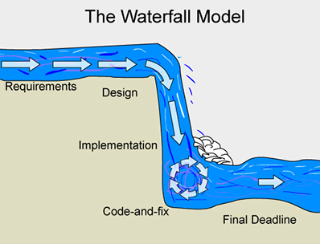

Home
WaterFall: The Long Jounrney

Over view:
The WaterFall aproach is a more continous and sequential process.
The steps are built up on eachother.
Developers and designers spend a good deal of
time on each step.
Steps in the WaterFall LifeCycle:
Requirements
Design
Implementation
Testing
Launch
scrummethodology.com-This site goes into more detail